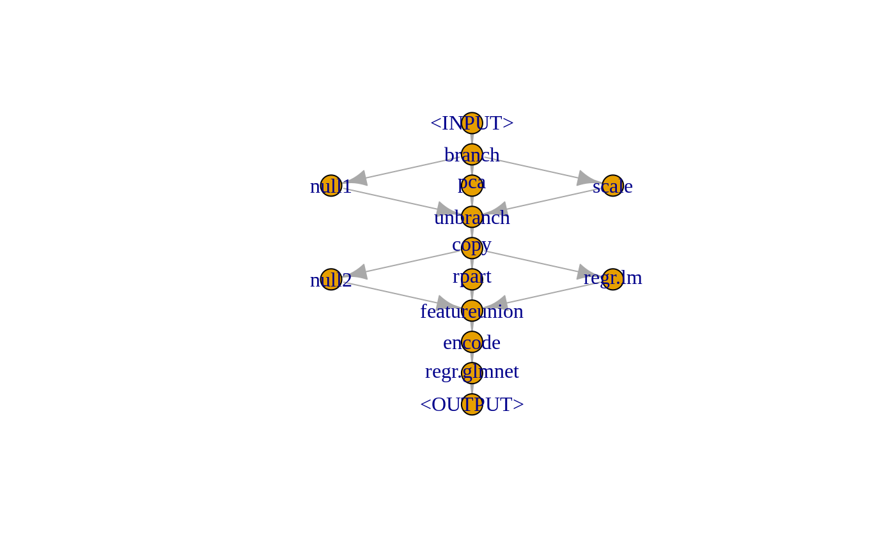

What is mlr3pipelines?
mlr3pipelines is a dataflow programming toolkit for machine learning in R utilising the mlr3 package. Machine learning workflows can be written as directed “Graphs” that represent data flows between preprocessing, model fitting, and ensemble learning units in an expressive and intuitive language. Using methods from the mlr3tuning package, it is even possible to simultaneously optimize parameters of multiple processing units.
In principle, mlr3pipelines is about defining singular data and model manipulation steps as “PipeOps”:
pca = mlr_pipeops$get("pca")
filter = mlr_pipeops$get("filter",
filter = mlr3featsel::FilterVariance$new(),
param_vals = list(frac = 0.5))
learner_po = mlr_pipeops$get("learner",
learner = mlr_learners$get("classif.rpart"))These make the following possible:
graph = pca %>>% filter %>>% learner_po
print(graph)
#> Graph with 3 PipeOps:
#> ID State sccssors prdcssors
#> pca <<UNTRAINED>> FilterVariance
#> FilterVariance <<UNTRAINED>> rpart pca
#> rpart <<UNTRAINED>> FilterVariance
task = mlr_tasks$get("iris")
holdout = mlr_resamplings$get("holdout")$instantiate(task)
graph$train(task$clone()$filter(holdout$train_set(1)))
#> $rpart.output
#> NULL
graph$predict(task$clone()$filter(holdout$test_set(1)))
#> $rpart.output
#> <PredictionClassif> for 50 observations:
#> row_id response truth
#> 1: 3 setosa setosa
#> 2: 6 setosa setosa
#> 3: 7 setosa setosa
#> ---
#> 48: 143 virginica virginica
#> 49: 145 virginica virginica
#> 50: 148 virginica virginicaFeature Overview
Single computational steps can be represented as so-called PipeOps, which can then be connected with directed edges in a Graph. The scope of mlr3pipelines is still growing; currently supported features are:
- Simple preprocessing operations: PipeOpScale, PipeOpPCA.
- Feature filtering: PipeOpFilter.
- Data feature type conversion: PipeOpEncode.
- Undersampling / subsampling for speed and outcome class imbalance handling: PipeOpSubsample, PipeOpUndersample.
- mlr3 Learner as operation in a Graph, both returning a “Prediction” (PipeOpLearner) and an added data feature for super learning (PipeOpLearnerCV).
- Simple ensemble methods on Predictions: PipeOpMajorityVote, PipeOpModelAvg.
- Simultaneous alternative paths with same input data: PipeOpCopy.
- Combination of data from alternative paths: PipeOpFeatureUnion.
- Optional alternative paths, chosen by Graph hyperparameter: PipeOpBranch, PipeOpUnbranch.
Graphs can be collected into a “GraphLearner” object that behave like mlr3 Learners, and can therefore be used both for model fitting and prediction, and can even be used in hyperparameter optimization.
Example
To show the power of mlr3pipelines, the following example shows how to build a Graph that chooses between multiple preprocessing methods, fits both a classification tree (from the rpart package) and a linear model (using R’s “lm()” function), and performs “stacking”—using the predictions of these two models as covariates for a third machine learning method—with penalised linear regression (using the glmnet package). (The example was chosen to show the expressiveness of the Graph language, not to perform particularly well). For a detailed explanation of all steps involved see the documentation.
The graph is built using single processing units—“PipeOps”—that are concatenated using the piping operator %>>%. Note the difference from the magrittr package’s operator %>%.
library("paradox")
library("mlr3")
library("mlr3pipelines")
library("mlr3learners")
graph =
mlr_pipeops$get("branch", c("null", "pca", "scale")) %>>%
gunion(list(
mlr_pipeops$get("null", id = "null1"),
mlr_pipeops$get("pca"),
mlr_pipeops$get("scale")
)) %>>%
mlr_pipeops$get("unbranch", c("null", "pca", "scale")) %>>%
mlr_pipeops$get("copy", 3) %>>%
gunion(list(
mlr_pipeops$get("null", id = "null2"),
mlr_pipeops$get("learner_cv", mlr_learners$get("regr.rpart")),
mlr_pipeops$get("learner_cv", mlr_learners$get("regr.lm"))
)) %>>%
mlr_pipeops$get("featureunion", 3) %>>%
mlr_pipeops$get("encode", param_vals = list(method = "treatment")) %>>%
mlr_pipeops$get("learner", mlr_learners$get("regr.glmnet"))The topology of this graph can most easily be seen using the Graph’s $plot method:

The graph can itself be used to perform model fitting and prediction, but in our example we want to perform parameter tuning first, using the mlr3tuning package. For this we wrap the Graph in a GraphLearner, which behaves mostly like a mlr3 “Learner” object. For simplicity, we decide only on a few parameters we want to tune: the preprocessing to perform (branch.selection), and the maximum tree depth (regr.rpart.regr.rpart.maxdepth).
learner = GraphLearner$new(graph, task_type = "regr")
ps = ParamSet$new(list(
ParamFct$new("branch.selection", levels = c("pca", "scale", "null")),
ParamInt$new("rpart.rpart.maxdepth", lower = 1, upper = 10)
))
task = mlr_tasks$get("bh")
task$select(task$feature_types[type != "factor", id])
resampling = mlr_resamplings$get("cv", param_vals = list(folds = 3))library("mlr3tuning")
ff = FitnessFunction$new(task, learner, resampling, ps)
tuner = TunerGridSearch$new(ff, TerminatorEvaluations$new(1), resolution = 3)
tuner$tune()
tuner$tune_result()$values[names(ps$params)]
#> $branch.selection
#> [1] "scale"
#>
#> $rpart.rpart.maxdepth
#> [1] 10This would tell us that the “scale” preprocessing branch with rpart maxdepth = 10 performs well; although the usage of only few small resampling folds makes the result very stochastic.
Documentation
The easiest way to get started is reading some of the vignettes that are shipped with the package, which can also be viewed online:
Bugs, Questions, Feedback
mlr3pipelines is a free and open source software project that encourages participation and feedback. If you have any issues, questions, suggestions or feedback, please do not hesitate to open an “issue” about it on the GitHub page!
In case of problems / bugs, it is often helpful if you provide a “minimum working example” that showcases the behaviour (but don’t worry about this if the bug is obvious).
Please understand that the ressources of the project are limited: response may sometimes be delayed by a few days, and some feature suggestions may be rejected if they are deemed too tangential to the vision behind the project.
Similar Projects
A predecessor to this package is the mlrCPO-package, which works with mlr 2.x. Other packages that provide, to varying degree, some preprocessing functionality or machine learning domain specific language, are the caret package and the related recipes project, and the dplyr package.